Regression comparison
Download resultsAggregation weights
\widehat y(x)=y_{\rm mean}+y_{\rm std}\sum_{h=1}^{H}\beta_h\mu_h(x)Coefficients can be negative and need not sum to one. Intervals describe coefficient uncertainty; the dashed reference is DE’s fixed 1/H weight.
BDKN

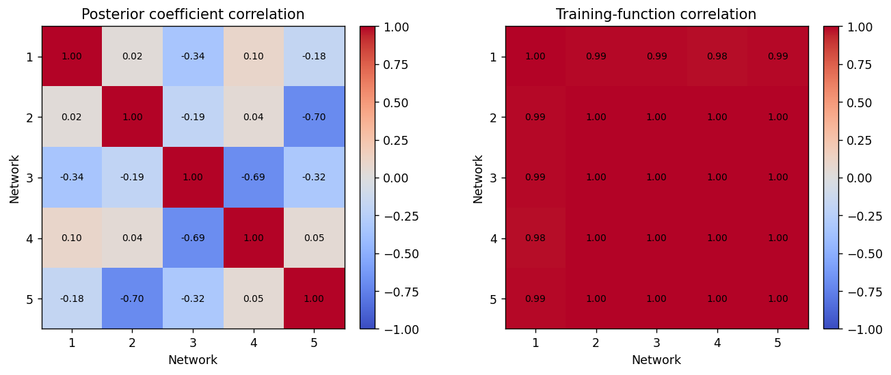


Each density panel uses its own X range for readability; coefficient intervals above share a common axis. Prior reference conditions on fitted noise. Contribution shares use held-out inputs; test targets are used only for scoring.
| Network | β mean | 95% low | 95% high | P(β > 0) | Contribution share | Test RMSE | Test NLL |
|---|---|---|---|---|---|---|---|
| 1 | 1.64634 | 0.98409 | 2.30859 | 0.99998 | 0.48029 | 62.55445 | 11.62638 |
| 2 | 0.45083 | -0.98652 | 1.88817 | 0.73980 | 0.12782 | 62.95527 | 16.43550 |
| 3 | -0.38688 | -1.78622 | 1.01246 | 0.28528 | 0.12531 | 62.36362 | 10.38803 |
| 4 | 0.16634 | -0.64366 | 0.97633 | 0.66352 | 0.05730 | 60.95023 | 43.23640 |
| 5 | -0.67137 | -2.07639 | 0.73364 | 0.16539 | 0.20927 | 62.64652 | 21.54277 |
Functional repulsion · BDKN
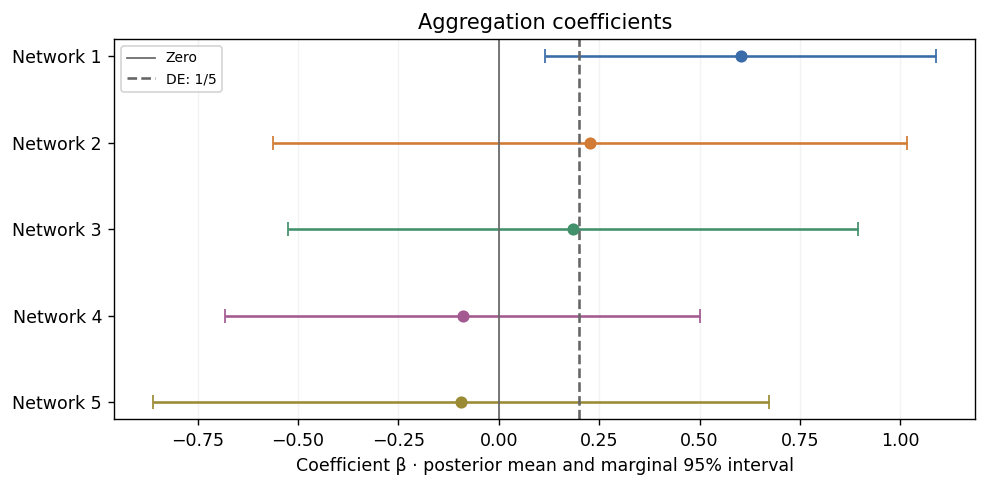
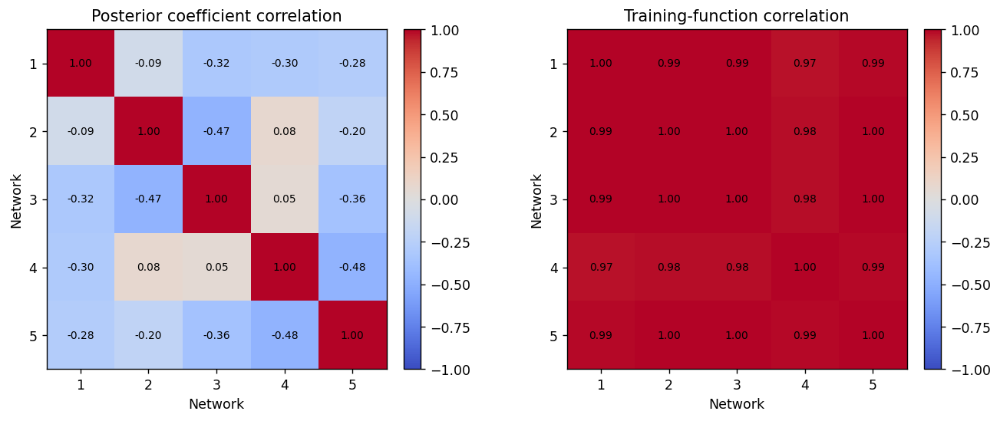
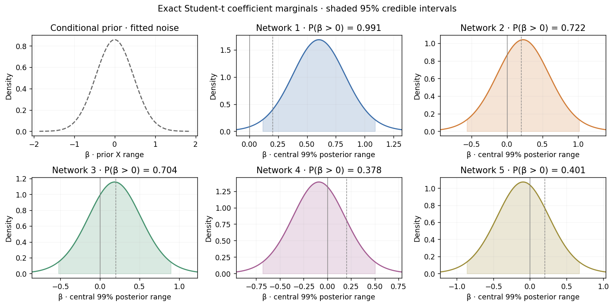
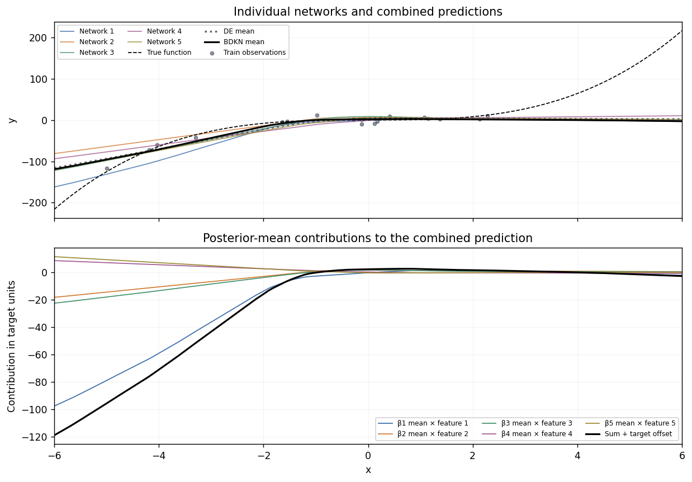
Each density panel uses its own X range for readability; coefficient intervals above share a common axis. Prior reference conditions on fitted noise. Contribution shares use held-out inputs; test targets are used only for scoring.
| Network | β mean | 95% low | 95% high | P(β > 0) | Contribution share | Test RMSE | Test NLL |
|---|---|---|---|---|---|---|---|
| 1 | 0.60272 | 0.11623 | 1.08922 | 0.99114 | 0.58927 | 61.99090 | 10.26898 |
| 2 | 0.22628 | -0.56259 | 1.01515 | 0.72183 | 0.12256 | 64.79484 | 17.02611 |
| 3 | 0.18516 | -0.52516 | 0.89549 | 0.70369 | 0.14610 | 61.13610 | 9.75793 |
| 4 | -0.08966 | -0.68094 | 0.50161 | 0.37752 | 0.06721 | 60.57231 | 51.16204 |
| 5 | -0.09345 | -0.85975 | 0.67286 | 0.40090 | 0.07485 | 61.53125 | 22.33083 |
Weight repulsion · BDKN
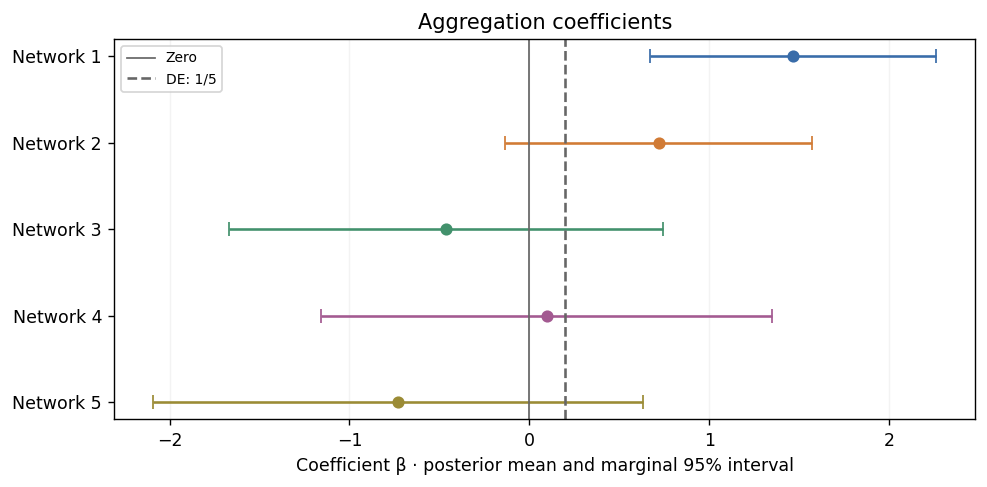
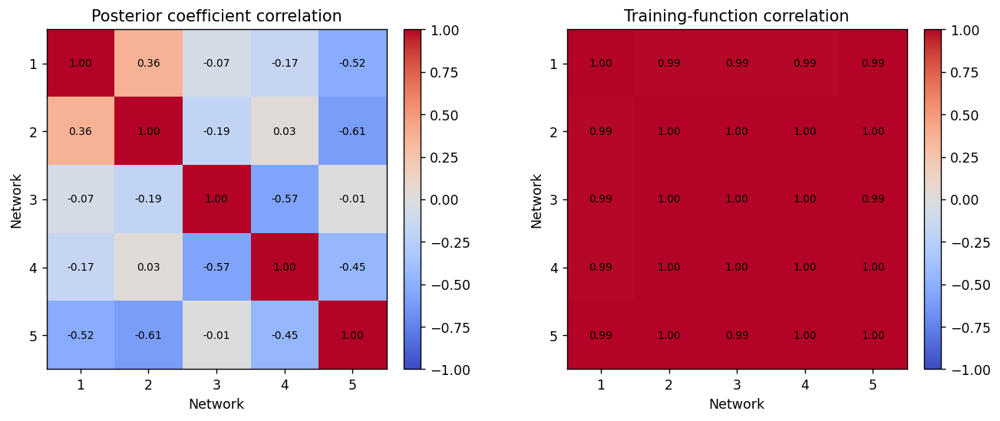
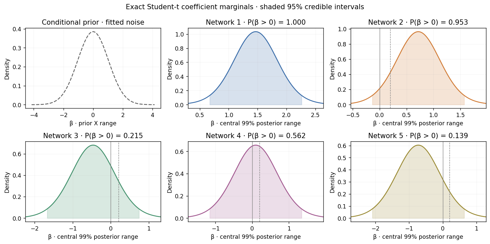

Each density panel uses its own X range for readability; coefficient intervals above share a common axis. Prior reference conditions on fitted noise. Contribution shares use held-out inputs; test targets are used only for scoring.
| Network | β mean | 95% low | 95% high | P(β > 0) | Contribution share | Test RMSE | Test NLL |
|---|---|---|---|---|---|---|---|
| 1 | 1.46716 | 0.67250 | 2.26182 | 0.99950 | 0.41576 | 67.50417 | 13.29159 |
| 2 | 0.71836 | -0.13537 | 1.57209 | 0.95273 | 0.19412 | 60.79188 | 13.90838 |
| 3 | -0.46500 | -1.67144 | 0.74144 | 0.21543 | 0.12782 | 74.63960 | 14.51469 |
| 4 | 0.09549 | -1.15655 | 1.34752 | 0.56240 | 0.03947 | 41.40064 | 14.44568 |
| 5 | -0.72785 | -2.08972 | 0.63402 | 0.13907 | 0.22282 | 57.70837 | 20.03158 |
First-order repulsion · BDKN
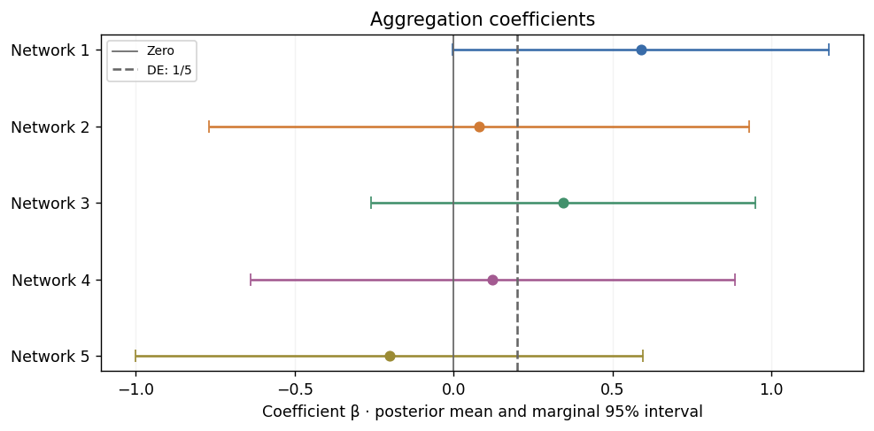
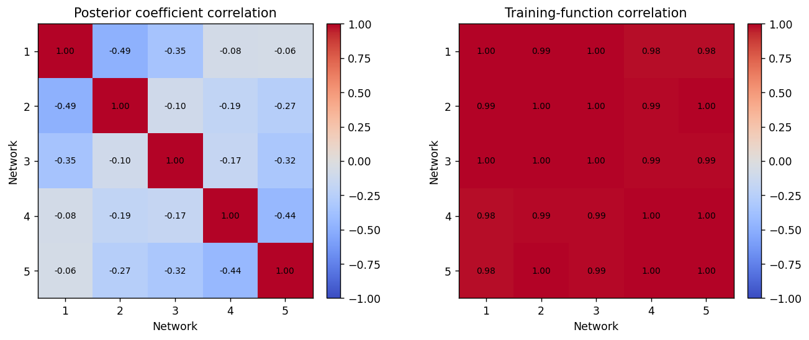
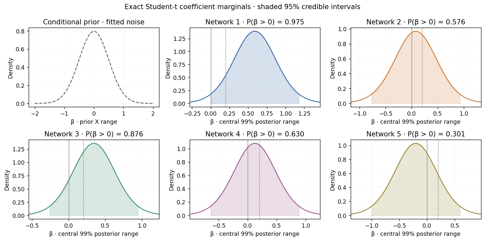
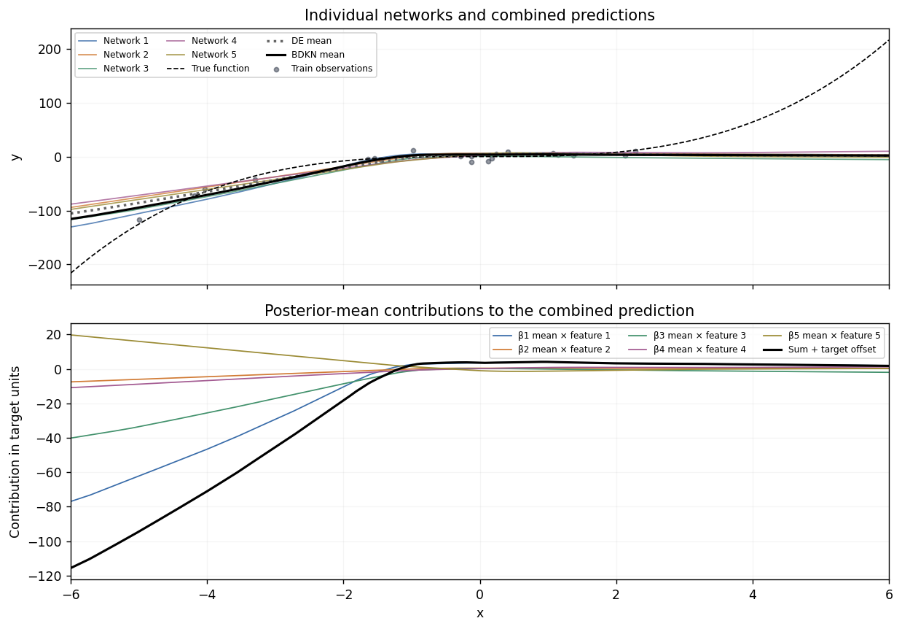
Each density panel uses its own X range for readability; coefficient intervals above share a common axis. Prior reference conditions on fitted noise. Contribution shares use held-out inputs; test targets are used only for scoring.
| Network | β mean | 95% low | 95% high | P(β > 0) | Contribution share | Test RMSE | Test NLL |
|---|---|---|---|---|---|---|---|
| 1 | 0.58936 | -0.00227 | 1.18098 | 0.97460 | 0.48162 | 59.51296 | 10.43691 |
| 2 | 0.07947 | -0.77014 | 0.92909 | 0.57637 | 0.04954 | 62.50108 | 17.07369 |
| 3 | 0.34409 | -0.26017 | 0.94835 | 0.87559 | 0.25851 | 64.31455 | 10.16703 |
| 4 | 0.12295 | -0.63828 | 0.88418 | 0.63015 | 0.08064 | 61.18897 | 20.41185 |
| 5 | -0.20205 | -0.99915 | 0.59505 | 0.30140 | 0.12969 | 64.13898 | 23.01199 |